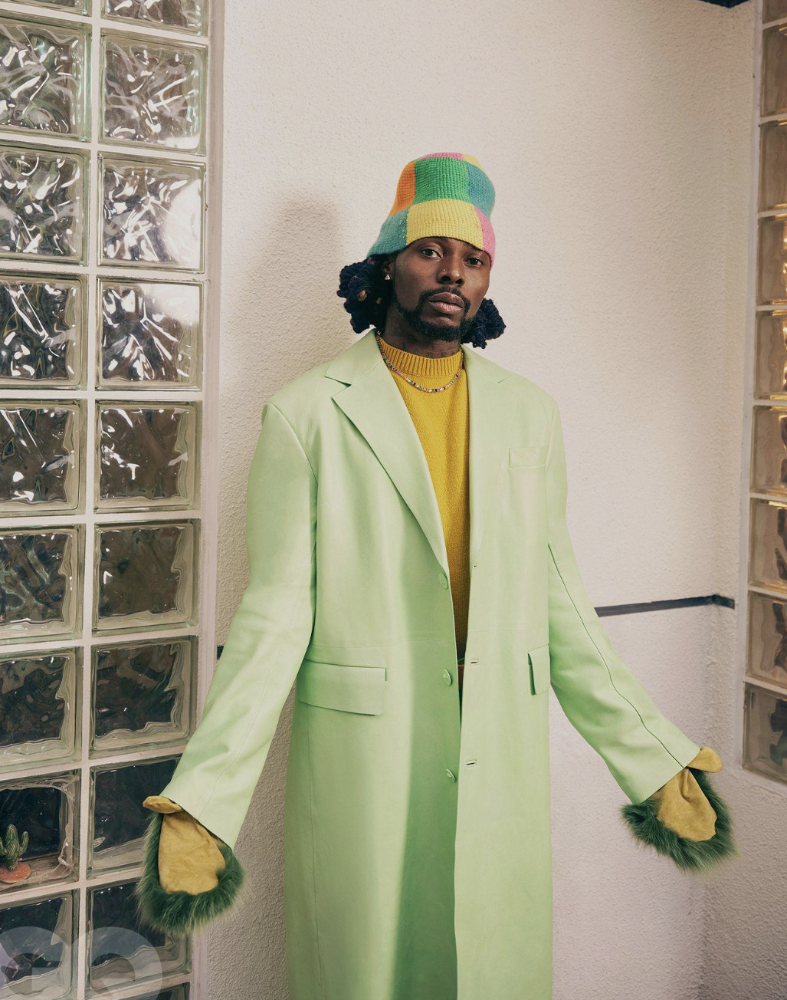

01 / THE ARTIST
THE MAN BEHIND
THE MUSIC.

MR. MONEY ✦GET TO KNOW ASAKE
AHMED
OLOLADE.
Asake, born Ahmed Ololade, is a Nigerian singer and songwriter recognized for his unique sound and energetic approach to music.
His music combines elements of Afrobeats, Amapiano, and Fuji, bringing together rhythmic production, memorable melodies, and Yoruba cultural influences.
Beyond his music, Asake is also known for his distinctive fashion choices, visual storytelling, and exciting performances.
FROM: Nigeria
SOUND: Afrobeats / Amapiano / Fuji
KNOWN AS: Mr. Money
THE ARTIST. THE CULTURE.